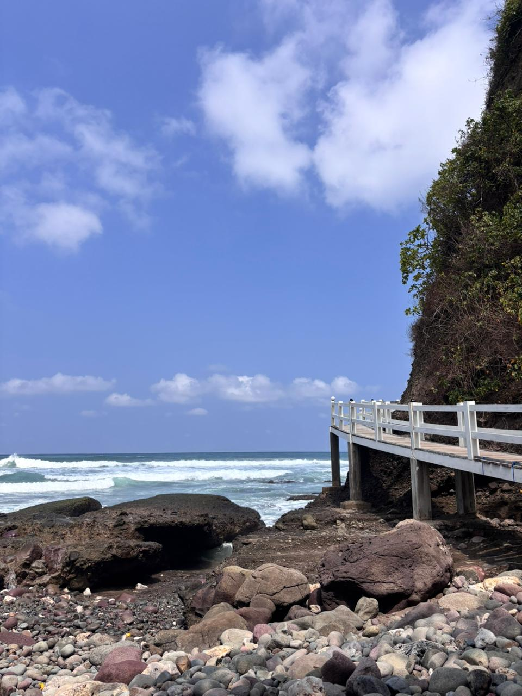

|
Pantai Surumanis merupakan salah satu pantai indah yang terletak di Desa Pasir, Kecamatan Ayah, Kabupaten Kebumen, Jawa Tengah. Pantai ini terkenal dengan pasirnya yang kecokelatan dan suasana yang masih alami serta tenang karena belum terlalu ramai pengunjung. Dikelilingi tebing tinggi dan pepohonan hijau, pantai ini menawarkan pemandangan laut selatan yang memukau, cocok untuk bersantai, menikmati matahari terbenam, dan berfoto. Akses menuju pantai cukup menantang karena harus melalui jalan menurun dan perbukitan, namun keindahannya sepadan dengan usaha yang dilakukan.

|